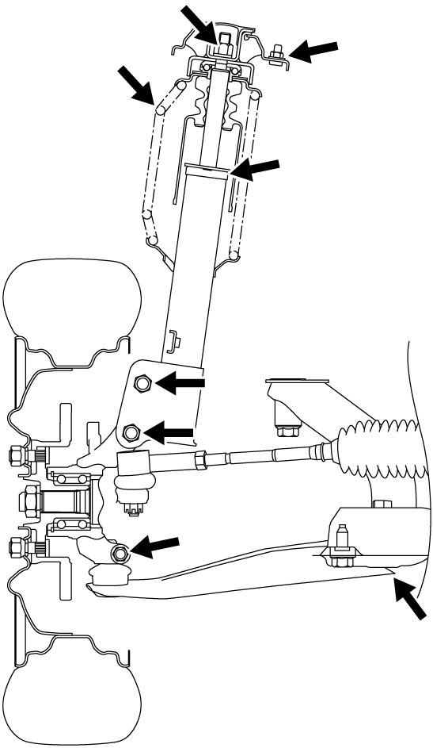
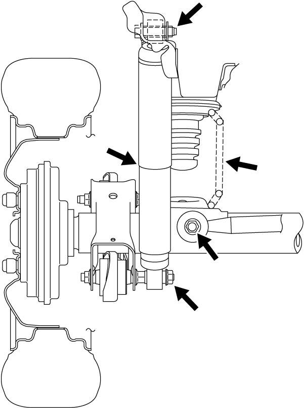
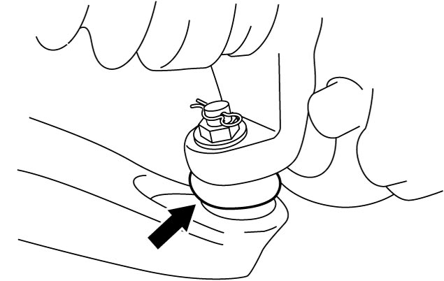

0B
| Suspension System Inspection |
•Check front strut assemblies and rear shock absorbers for sign of oil leakage, dents or any other damage on sleeves. Also check anchor ends for deterioration.
Replace defective parts, if any.
•Check front and rear suspension systems for damaged, loose or missing parts. Also check them for parts showing signs of wear or lack of lubrication.
Repair or replace defective parts, if any.
 •Check dust covers of front suspension arm ball joints for leakage, detachment, tear or any other damage.
•Check dust covers of front suspension arm ball joints for leakage, detachment, tear or any other damage.
For checking procedure, refer to Steps 1) to 10) of “Joint” under Suspension Arm Check.
Replace defective parts, if any.
•Check front and rear suspension systems for damaged, loose or missing parts. Also check them for parts showing signs of wear or lack of lubrication.
Repair or replace defective parts, if any.
Front

 "Expand image")
Rear

 "Expand image")
For checking procedure, refer to Steps 1) to 10) of “Joint” under Suspension Arm Check.

 "Expand image")